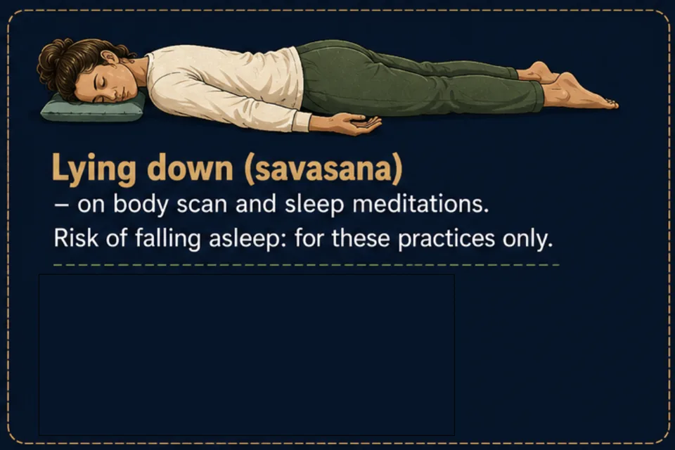
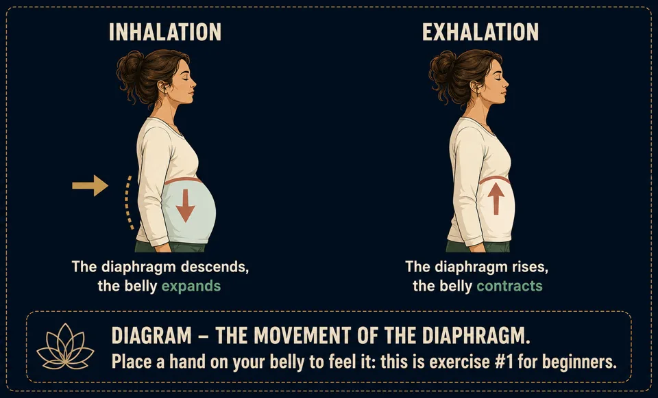
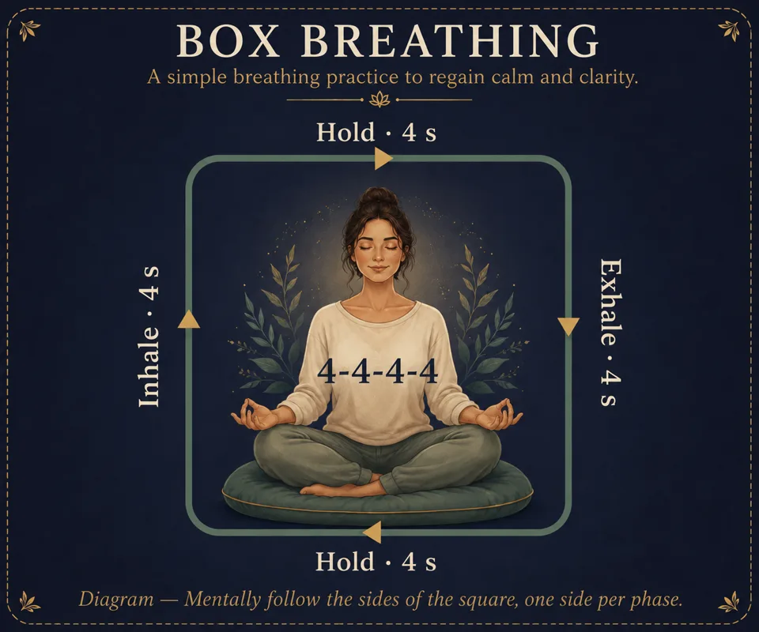

4 breathing techniques for meditation and calm
Belly breathing, coherent breathing, box breathing and 4-7-8: the 4 breathing techniques of meditation, when to use each, with diagrams and precautions.
Your breath is the most direct tool for calming body and mind: always available, free, and working within minutes. Belly breathing, coherent breathing, box breathing and 4-7-8 — four breathing techniques worth knowing, whether you want to relax, focus or fall asleep.
The breath
Understanding: abdominal breathing
Most of us breathe “from the top” (chest, shoulders), a short breath associated with stress. Meditative breathing descends into the belly: on the inhale, the diaphragm drops and the belly expands; on the exhale, it rises and the belly deflates. It's the natural breath of sleep and calm.

- Place one hand on your belly, the other on your chest.
- Inhale through the nose, letting your belly gently push your hand out. The top hand barely moves.
- Exhale slowly through nose or mouth, the belly comes back. Exhale a little longer than you inhale.
- Repeat 10 breaths. That's your first complete meditation exercise.
The 4 breathing techniques to know
Each has a specific use. Learn them in this order — they come back in all the menu meditations.
① Cardiac coherence (5-5) — daily balance
Inhale 5 seconds, exhale 5 seconds, for 5 minutes (6 breaths/minute). Practiced 3 times a day, it regulates stress by acting on the autonomic nervous system.

② Box breathing (4-4-4-4) — concentration
Four equal beats: inhale 4 s, hold 4 s (full lungs), exhale 4 s, hold 4 s (empty lungs). Used to recenter before a demanding moment.

③ 4-7-8 — falling asleep and calming
Inhale through the nose for 4 s, hold for 7 s, exhale slowly through the mouth for 8 s (as through a straw). The very long exhale activates the body's natural brake. 4 cycles are enough to start.

④ Alternate nostril breathing (Nadi Shodhana) — rebalancing
Breathe through one nostril at a time, alternating. Clarifying and calming effect, ideal before a meditation session.
- Right hand: thumb on the right nostril, ring finger ready for the left.
- Close the right, inhale on the left (4 s).
- Close the left, exhale on the right (6 s), then inhale on the right (4 s).
- Close the right, exhale on the left (6 s). That's one cycle — chain 5 to 10 cycles.
🌬️ Interactive breathing guide
The bubble that paces your breath in real time — growing as you inhale, shrinking as you exhale — lives in the app, with all four rhythms above. Download Awakening Minds for free to try it.
Frequently asked questions
Which breathing helps you fall asleep?
The 4-7-8: its long exhale naturally slows your rhythm. Practice it lying down in the dark, then follow with a guided sleep meditation — the most effective pairing for deep sleep.
How long should I practice coherent breathing?
Five minutes is enough: six breaths per minute, ideally three times a day. It's the simplest guided breathing exercise to build into daily life.
Who is box breathing for?
For regaining focus before a demanding moment: its four equal phases occupy the mind completely. Avoid breath retention, however, during pregnancy or with heart or breathing difficulties.
Rather practice than read?
Everything in this article can be practiced in Awakening Minds, a free meditation app: 150 guided meditations — sleep, breathing, immersive worlds — no subscription, no ads, no account, and fully offline.
✦ Discover the free appRead next
Guided sleep meditation: fall asleep more easily
Why sleep runs away when you chase it, the evening posture, 4-7-8 breathing, and how a guided sleep meditation actually works.
Meditation posture: 4 positions that actually work
Chair, cross-legged, seiza or lying down: the 4 meditation positions with diagrams, and the 7 points of a dignified, relaxed posture.